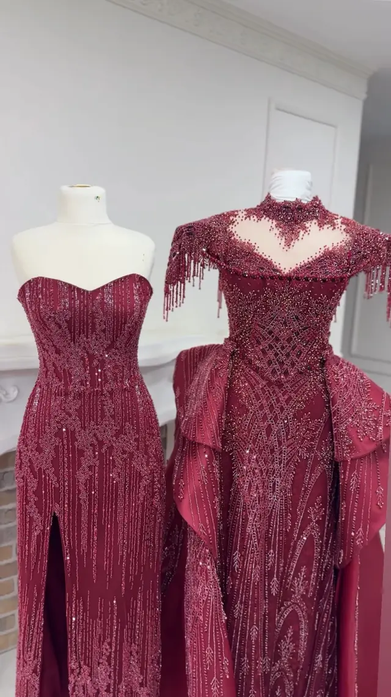
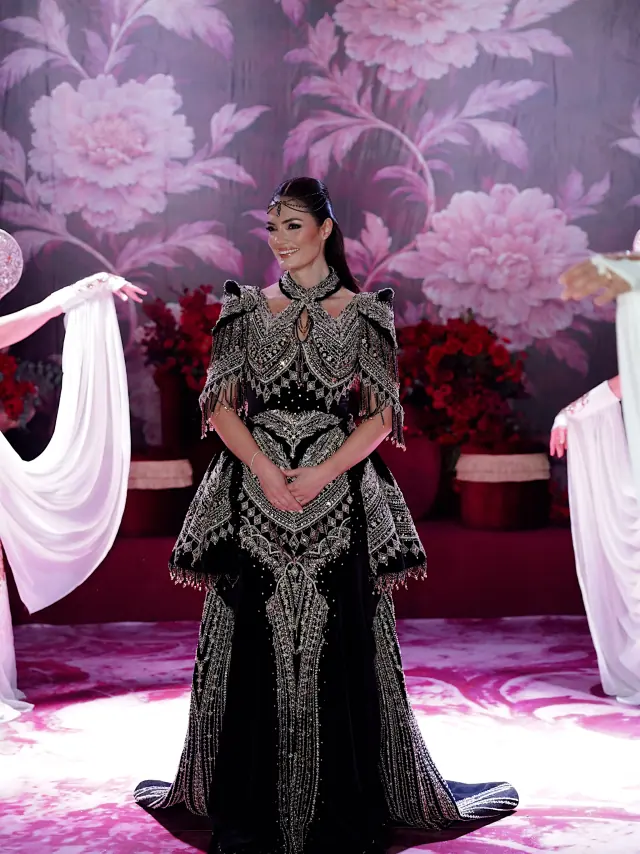

Kına ve kaftan · Kiralık
Lacivert kadife kaftan
Kadifenin derin lacivertine altın tonlu boncuk ve taş işleme. Omuzdan eteğe inen ışık çizgileri, saten pelerin ve taç.


Kınanın zarafeti, Büşra gelinimizin güzelliğiyle bambaşka.
Bu kaftan, Büşra'nın kına gecesinde sahneye onunla birlikte çıktı. Lacivert kadife ışığı yutar, altın işleme geri verir; gece ilerledikçe kaftan da değişir.
Büşra'nın o gece tercih ettiği kaftanı, gelin adaylarımızın hayallerine eşlik etmesi için özenle kiralıyoruz.
Beyzadem Bridal- Kumaş
- Lacivert kadife
- İşleme
- Altın tonlu boncuk ve taş, gövdeden eteğe
- Tamamlayıcı
- Siyah saten pelerin, işlemeli taç
- Gece
- Kına
- Seçenek
- Kiralık
Beden ve tarih uygunluğunu mesajla öğrenebilirsiniz.

Aynı dünyadanDiğer kaftanlar

Gümüş saçaklı kaftanSiyah kadife

Altın sırma kaftanSiyah kadife

Bordo kına elbiseleriKiralık

Gümüş saçaklı kaftanBoydan